Monochrome joint silhouettes for human review. This diagnostic omits mesh, face, hue, captions inside the frame and light trails. It does not automatically establish emotional readability.
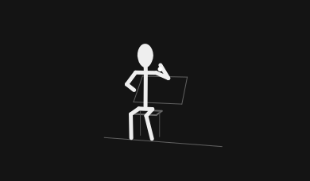
02 · Imagine a placetimeline 1.00
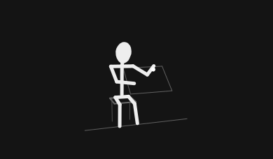
03 · Draw the first linestimeline 2.0004 · Turn the drawing into an interfacetimeline 3.00
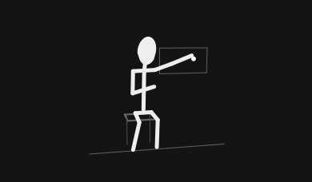
05 · Build one componenttimeline 4.00
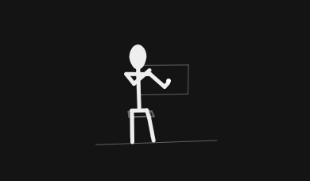
06 · Fit it into a larger systemtimeline 5.00
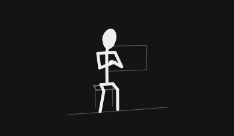
07 · Make it dependabletimeline 6.00
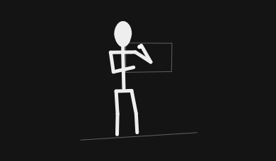
08 · Listen to the requirementtimeline 7.00
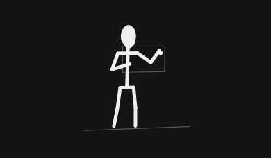
09 · Connect across boundariestimeline 8.00
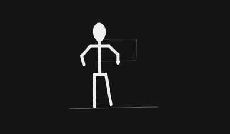
10 · Bring the pieces togethertimeline 9.00
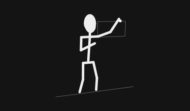
11 · Invite intelligence into the workflowtimeline 10.00
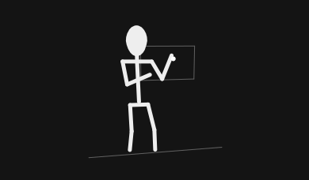
12 · Pause at the review boundarytimeline 11.00
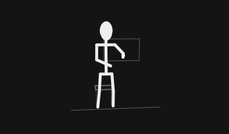
13 · Keep the person in controltimeline 12.00
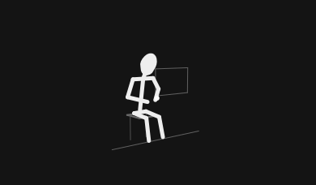
14 · Hold on to the possibilitytimeline 13.0015 · Meet the resistancetimeline 14.00
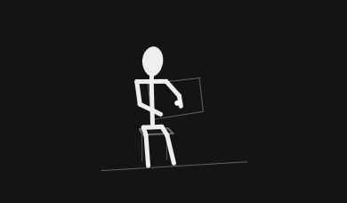
16 · Stay with the problemtimeline 15.00
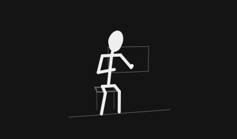
17 · Return to the worktimeline 16.00
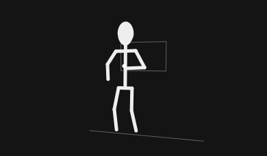
18 · Keep the light alivetimeline 17.00
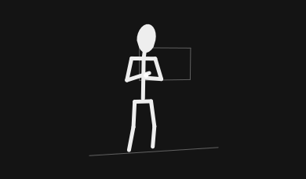
19 · Keep the lessontimeline 18.0020 · Look beyond my own methodstimeline 19.00
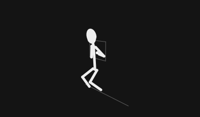
21 · Distil a capabilitytimeline 20.00
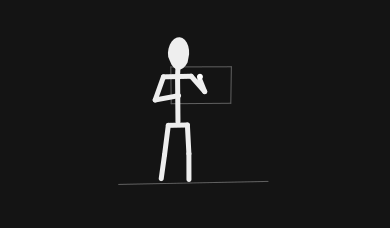
22 · Build a distinctive advantagetimeline 21.00
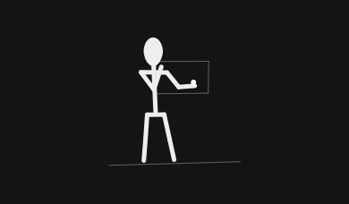
23 · Face the hidden complexitytimeline 22.00
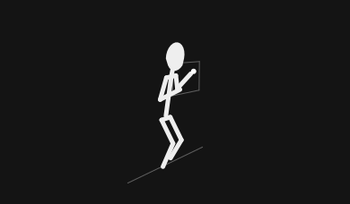
24 · Shape a clear way intimeline 23.00
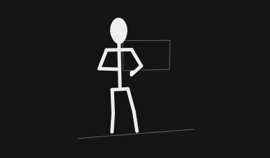
25 · Give the person agencytimeline 24.00
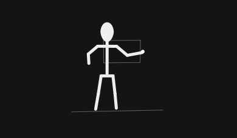
26 · Make the experience invitingtimeline 25.00
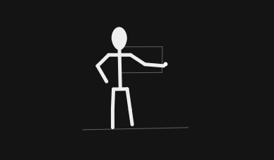
27 · Open the doortimeline 26.00
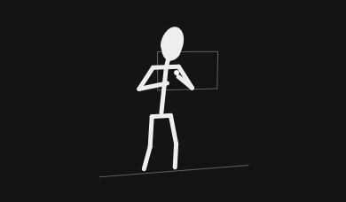
28 · Make the work inspectabletimeline 27.0029 · Offer the next possibilitytimeline 28.0030 · Reflecttimeline 29.00